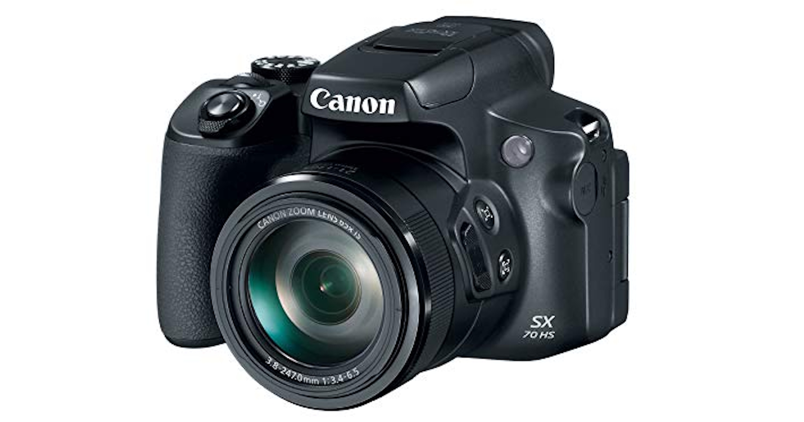

Bridge Cameras
Bridge cameras serve as a middle ground between point and shoot cameras and DSLRs. They are called "bridge" cameras because they combine the compactness and ease of use of point-and-shoots with some advanced features of DSLRs. These cameras are larger than standard compacts but still lack an interchangeable lens system, meaning the lens that comes with the camera is the only one you can use.
However, bridge cameras stand out because they often have powerful zoom lenses, with some models offering zoom ranges of 50x or more. This makes them ideal for capturing distant subjects like wildlife or sports. Many bridge cameras include manual settings, allowing users to adjust shutter speed, aperture, and ISO for more creative control. While they may not match DSLRs in image quality due to their smaller sensors, they are a great option for photographers who want a versatile all-in-one camera without the need to carry extra lenses.
Uses
- Wildlife photography – Powerful zoom allows capturing distant subjects.
- Travel photography – A single all-in-one camera with great reach.
- Hobbyist photography – Ideal for those who want to practice manual settings before upgrading to a DSLR.
Pros & Cons
Pros
- ✅ Versatile zoom – Great for both wide-angle and telephoto shots
- ✅ Manual controls available – Offers creative flexibility
- ✅ More affordable than DSLRs and mirrorless – A good balance of features